똑같은 AI인데, 프롬프트 한 줄로
결과가 이렇게 달라집니다
이 가이드는 gpt-image-2로 직접 생성한 실제 이미지를 일일이 검증해 만들었습니다. 예전 통념과 달리 이 모델은 영어 문장과 짧은 한글 텍스트, 자연스러운 손, 적은 개수 세기, 또렷한 라벨까지 놀랄 만큼 잘 그려내고 스타일·구도 지시에도 충실합니다. 다만 정확한 종횡비·치수 강제, 차트 속 실제 숫자, 부분(마스킹) 편집, 같은 캐릭터의 반복 재현, 빽빽한 텍스트의 재현성에는 약하므로 중요한 글자·숫자·규격은 후편집으로 마무리하는 것을 권장합니다.
🧭 모든 장르에 통하는 핵심 원리
아래는 변수 하나만 바꿔 같은 주제를 두 번 생성한 비교 실험입니다. 왼쪽(약한 프롬프트)과 오른쪽(강한 프롬프트)의 차이가 곧 '잘 쓰는 법'입니다.
- 중요한 대상은 프롬프트 맨 앞에 써라 — 뒤로 갈수록 작아지거나 배경에 묻힌다(부스 실험에서 명확히 확인).
- 빛을 말로 지정하면(골든아워·림라이트·측광) 평평한 이미지에 입체감과 분위기가 생긴다. 렌즈·조리개 용어(50mm·f/1.8)는 배경 흐림 같은 사진 디테일을 정밀하게 다듬는다.
- 색은 '예쁜 색'처럼 모호하게 말하면 제멋대로 나오고, 정확한 색 이름으로 한정하면(더스티로즈·세이지·크림만) 그대로 잠긴다.
- 분위기 단어 한 줄(으스스·안개·따뜻한·차가운 톤)이 장면 전체의 느낌을 바꾼다 — 무드는 가장 가성비 좋은 키워드다.
- 글자 넣을 공간이 필요하면 주인공 위치와 '큰 빈 여백'을 직접 지시하라. '미니멀·여백 많이'라고 하면 깔끔하게, 물건을 다 넣으라 하면 빽빽하게 나온다.
- 크기·웅장함은 자동으로 안 생긴다 — '아주 작은, 광활한, 압도하는' 같은 말로 직접 만들어야 스케일감이 나온다.
- 배경을 '단색 스튜디오+부드러운 그림자'로 지정하고 'no text/no people' 같은 제외 문구를 더하면 주인공이 깔끔하게 분리되고 잡요소가 안 끼어든다(보험처럼 넣어 손해 없음).
- 글자만 바꿔 다시 생성하면 그 부분만 바뀌는 게 아니라 전체가 새로 그려진다(색은 바뀌어도 모양까지 달라짐) — 똑같이 두고 한 곳만 고치려면 재생성이 아니라 이미지 편집 기능을 써야 한다.
① 스타일을 맨 앞에 못 박아라
같은 주제라도 'flat vector', 'watercolor' 처럼 매체·기법을 먼저 적으면 결과가 안정됩니다. 안 적으면 매번 다른 화풍이 나옵니다.
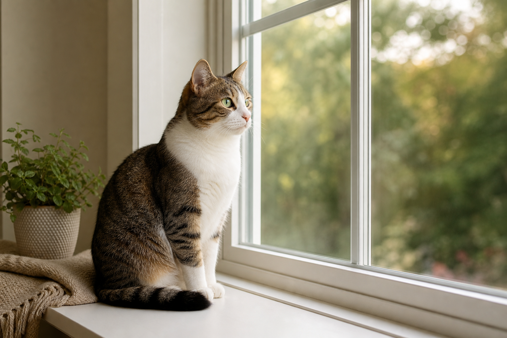
a cat sitting by a window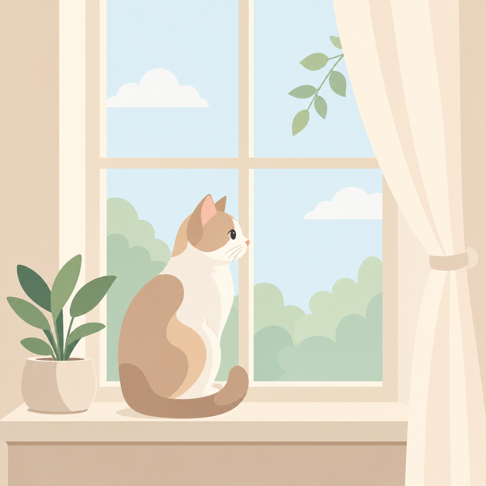
Flat vector illustration of a cat sitting by a window, minimal clean shapes, soft pastel palette② 구체적으로 써라
'방' 대신 '북유럽풍 거실, 오크 바닥, 큰 창, 아침 햇살'처럼 적을수록 의도대로 나옵니다. 모호하면 모델이 알아서 평범하게 채웁니다.
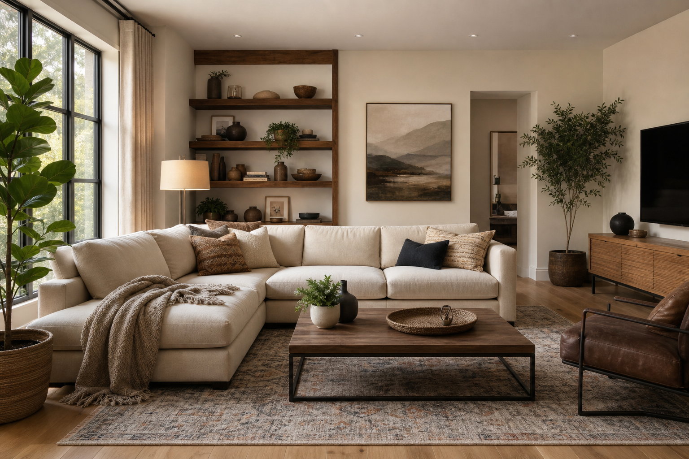
a living room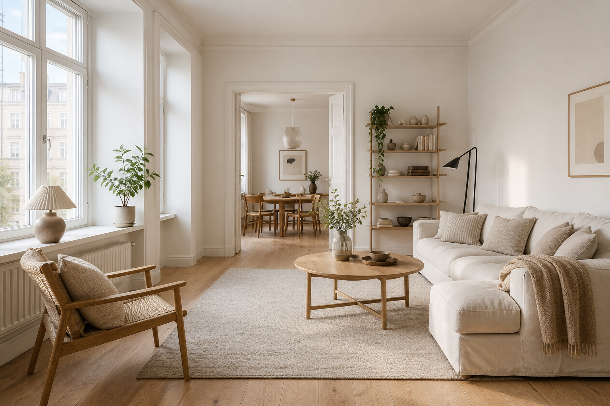
a Scandinavian living room, oak wood floor, white walls, large windows with soft morning daylight, cozy minimal style, neutral palette③ 중요한 것을 먼저
프롬프트 앞쪽 단어가 더 큰 영향을 줍니다. 주인공을 문장 맨 앞에 두면 화면에서도 주인공이 됩니다.
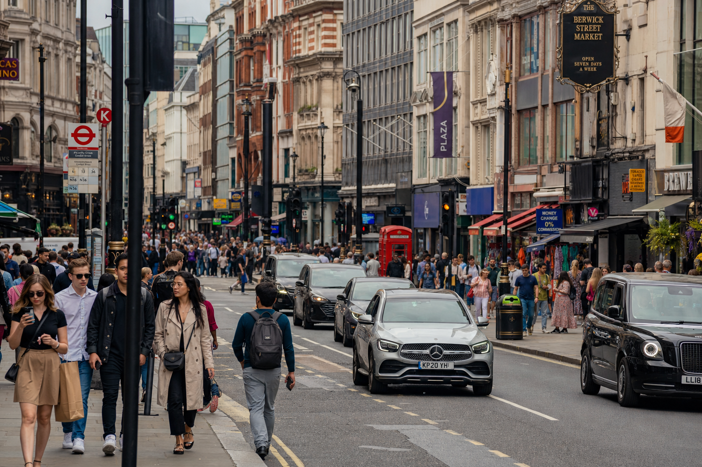
a busy detailed city street with many shops, signs, cars and crowds, and somewhere a small red telephone booth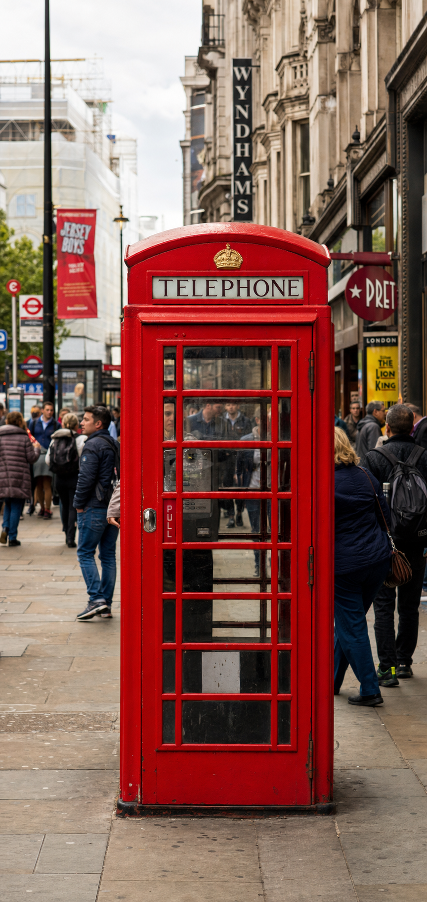
A red telephone booth as the clear focal point, set in a busy detailed city street with shops, signs and crowds behind it④ 빼고 싶은 것은 직접 말하라
'no text, no logo, no people, plain background' 처럼 배제할 것을 적으면 불필요한 요소가 줄어듭니다.
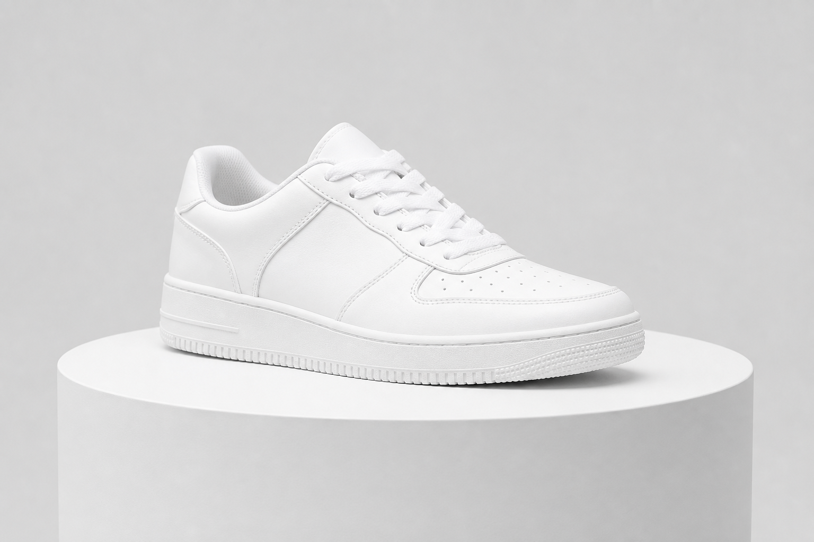
a clean product photo of a white sneaker on a pedestal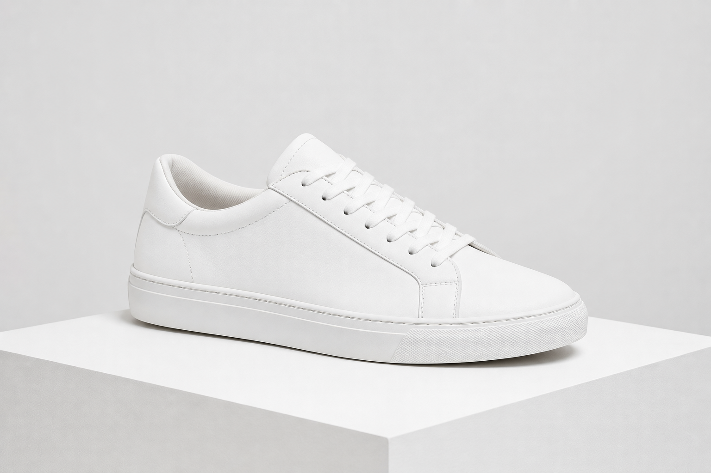
a clean product photo of a white sneaker on a pedestal, no text, no logos, no people, plain seamless background⑤ 글자는 생각보다 잘 나온다 (영어·한글 모두)
예전 AI와 달리 gpt-image-2는 영어 긴 문장은 물론 짧고 흔한 한글(예: '안녕하세요')까지 정확히 씁니다. 다만 매우 길거나 조밀한 텍스트·정확한 숫자·매번 같은 재현성은 보장되지 않으니, 중요한 글자는 후편집으로 마무리하세요.
a vintage cafe storefront with a wooden sign that clearly says 'OPEN'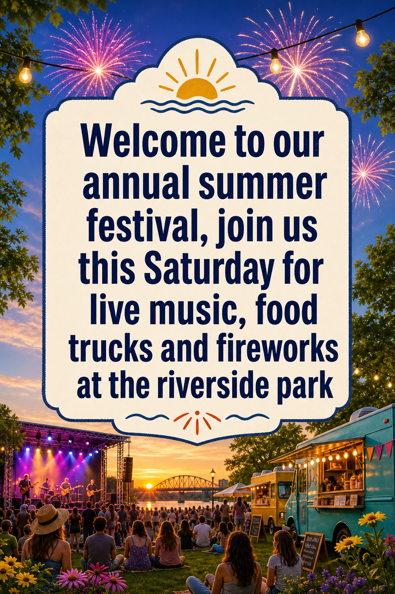
a poster with the full paragraph clearly written: 'Welcome to our annual summer festival, join us this Saturday for live music, food trucks and fireworks at the riverside park'⑥ 조명을 지정하라
'soft golden hour light, rim light' 같은 조명 키워드가 입체감과 분위기를 만듭니다. 없으면 밋밋해집니다.
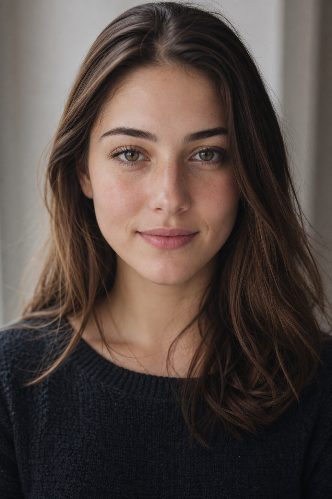
portrait of a young woman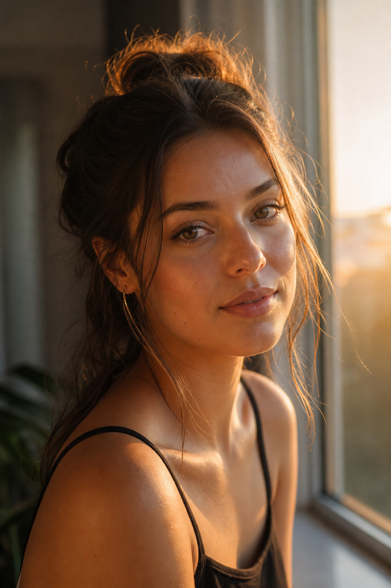
portrait of a young woman, soft golden hour window light, gentle rim light, cinematic mood⑦ 사실적 사진엔 카메라 용어
'50mm, f/1.8, shallow depth of field, photorealistic'을 넣으면 일러스트풍이 진짜 사진처럼 바뀝니다.
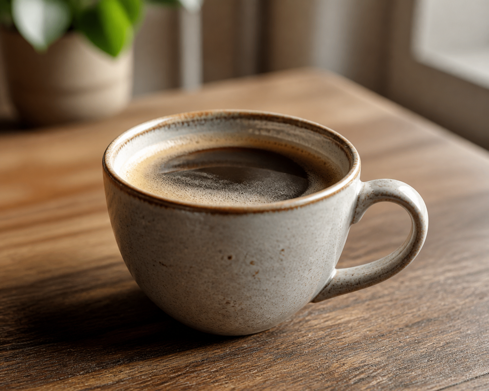
a cup of coffee on a table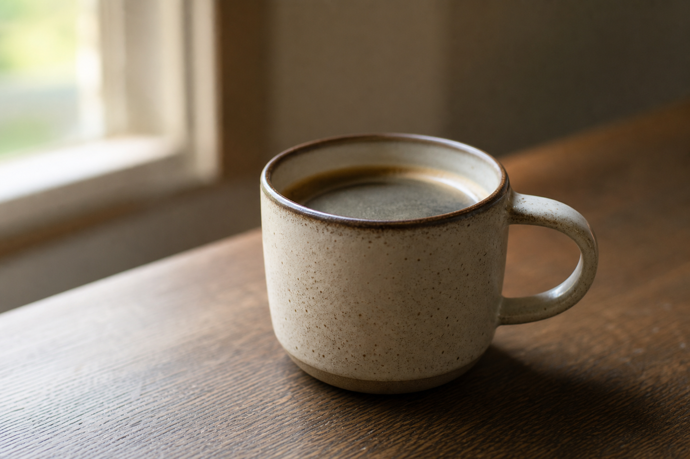
a cup of coffee on a table, 50mm lens, f/1.8 shallow depth of field, photorealistic, soft natural side light, high detail⑧ 가로/세로 비율은 '유도'한다
gpt-image-2는 해상도를 강제할 수 없지만 '16:9 widescreen, panoramic' 같은 어휘로 비율을 유도할 수 있습니다.
a mountain landscapea mountain landscape, 16:9 widescreen, wide horizontal panoramic composition, ultra-wide⑨ 색은 팔레트로 지정
'예쁜 색' 대신 'dusty rose, sage green, cream만'처럼 구체적 팔레트를 주면 색을 통제할 수 있습니다.
an abstract background with nice colors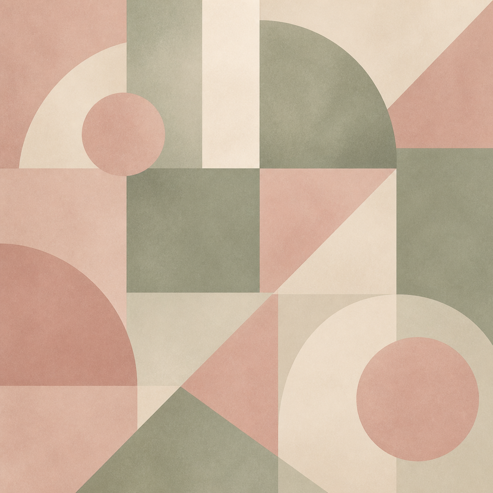
an abstract geometric background, limited palette of dusty rose, sage green and cream only, soft and muted⑩ 글자 들어갈 여백을 미리 비워라
'large empty space on the left for text'라고 하면 카피/제목 들어갈 자리가 생깁니다. 광고·슬라이드·포스터 필수.
a hero banner of a coffee cup, warm tonesa hero banner with a coffee cup on the right side, large empty negative space on the left for headline text, warm tones⑪ 분위기 단어를 더하라
'eerie, foggy, moody' 같은 분위기 어휘가 전체 톤을 결정합니다.
a foresta forest, eerie foggy mysterious atmosphere, dark moody lighting, cold tones⑫ 단순할수록 강하다
요소를 너무 많이 요구하면 산만하고 일부는 무시됩니다. 핵심만 남기고 여백을 주세요.
a desk with a laptop, coffee, books, plant, lamp, phone, notebook, pen, headphones, camera, speaker, clock all togethera minimal desk with just a laptop, centered, lots of empty space, clean⑬ 배경을 통제하라
'plain solid background, centered'라고 하면 깔끔하게 나오고 누끼(추출)도 쉬워집니다.
a friendly mascot robot character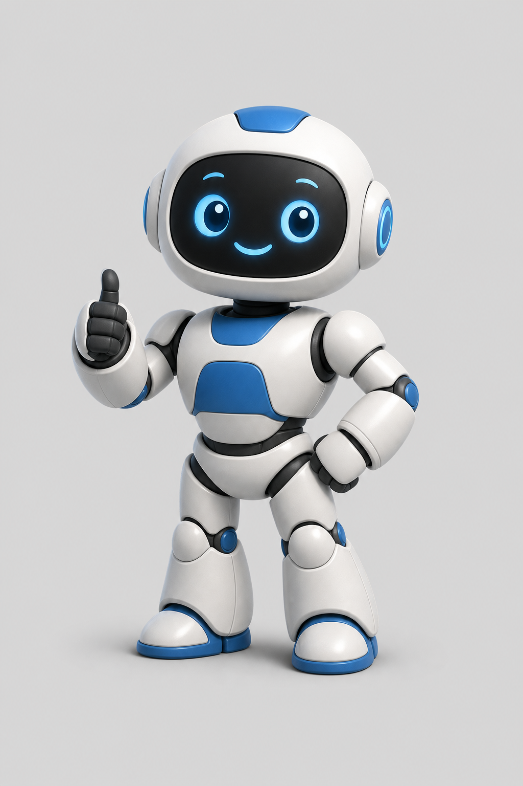
a friendly mascot robot character, plain solid light gray studio background, centered, soft shadow⑭ 크기 대비로 스케일감을
'tiny ... on a vast ...'처럼 크기 대비를 강조하면 웅장함/규모가 살아납니다.
a lighthouse on a beach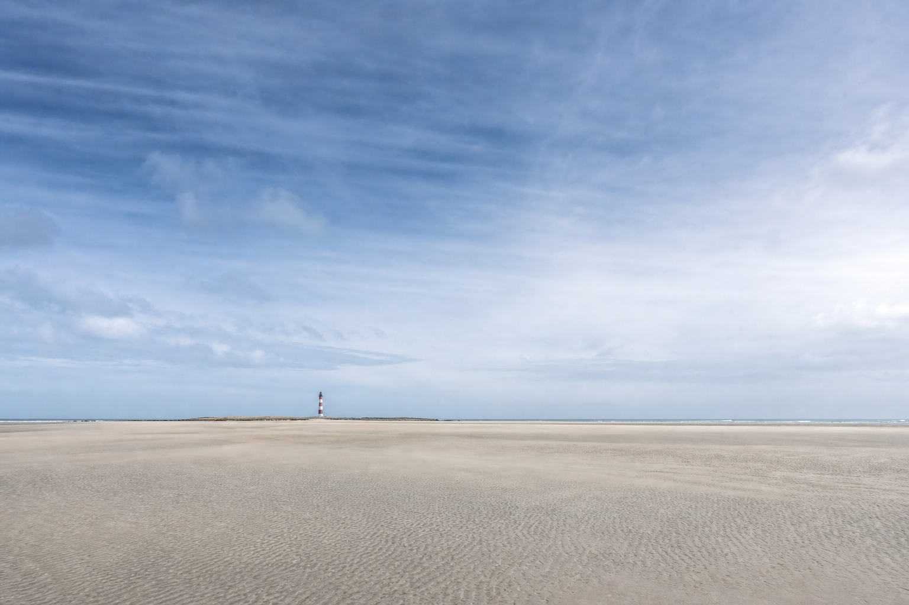
a tiny lighthouse on a vast empty beach, the lighthouse very small in the frame, huge sky and endless sand dominating, strong sense of scale⑮ 편집은 '재생성'으로 흉내낸다
gpt-image-2는 진짜 마스킹 편집이 약합니다. 원본을 다시 묘사하고 바꿀 점만 더해 새로 생성하는 방식이 현실적입니다.
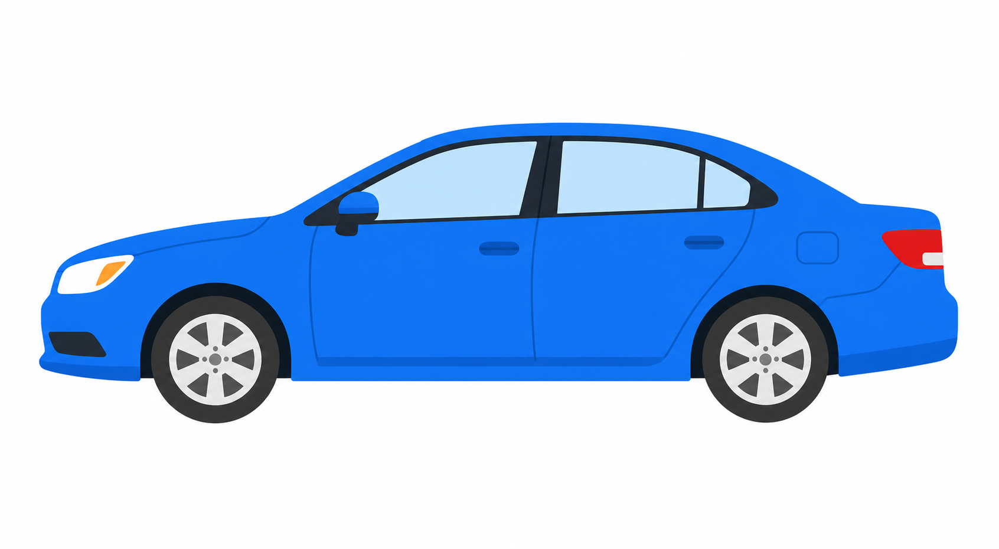
a simple flat illustration of a blue car on a plain white background, side view, centered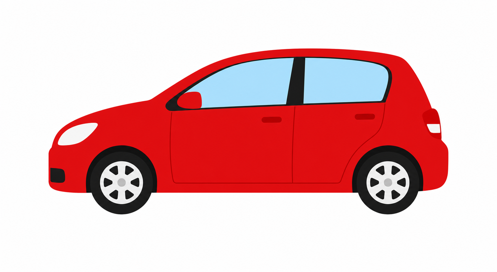
a simple flat illustration of a red car on a plain white background, side view, centered작은 개수는 의외로 정확
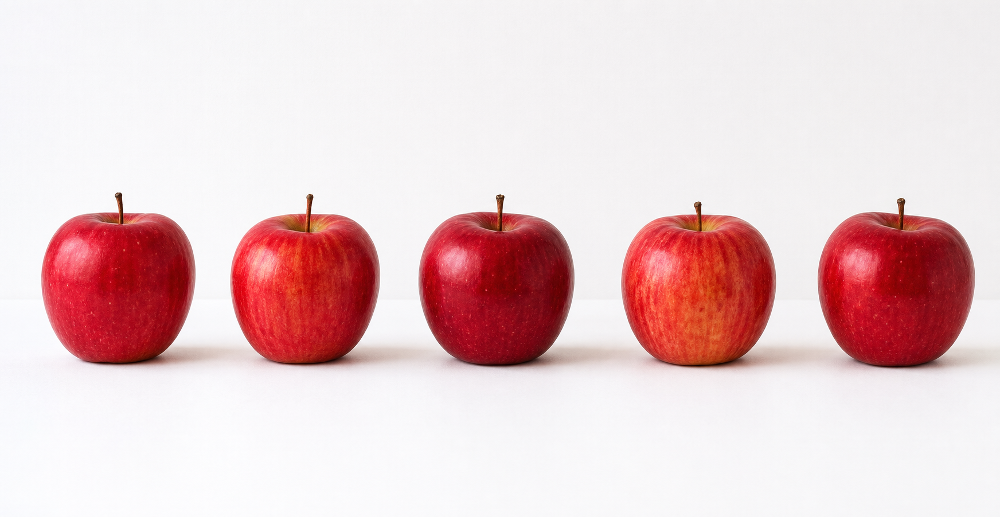
반전: 한글도 의외로 잘 나온다
반전: 손도 많이 좋아졌다
한 장 안 세트는 스타일만 통일
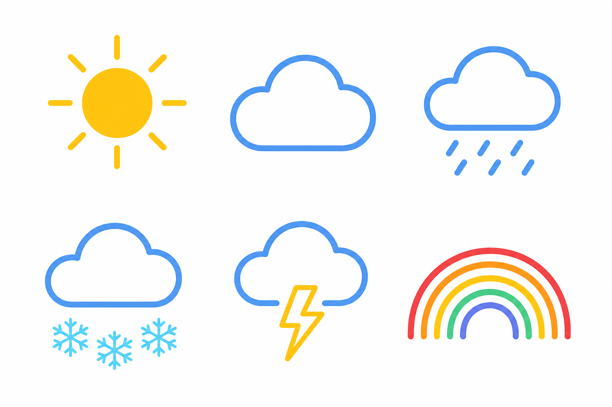
상충 스타일은 '하나만' 골라 적용된다
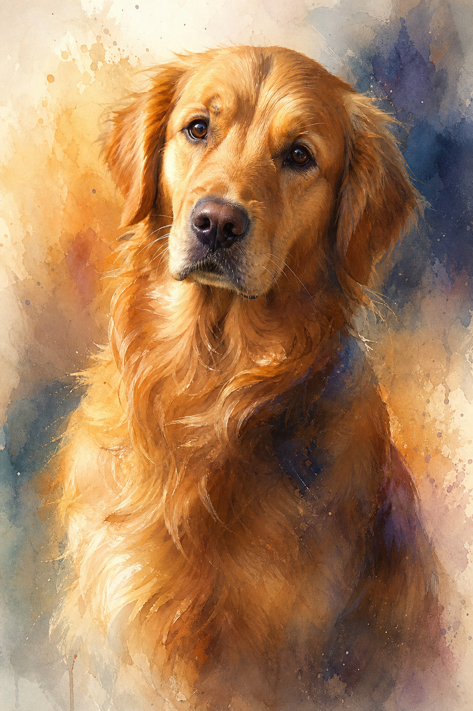
🎨 일러스트·그림
Illustration원하는 화풍(매체+기법)을 맨 앞에 못박고, 주제·구도·색팔레트·조명·분위기를 콤마로 이어 그림을 그리게 하는 장르
- 스타일을 첫 구절로 명시한다(flat illustration, continuous line art, 1960s mid-century 등)
- 색은 '예쁜' 같은 추상어 대신 'mustard, teal, orange' 처럼 구체 팔레트로 적는다
- 주제→구도→팔레트→조명→분위기 순으로 핵심 4~6요소만 콤마로 연결한다
- stunning/epic/masterpiece 같은 빈 칭찬 형용사를 쌓으면 화풍 통제 없이 generic한 결과가 나온다
- dragons+castles+spaceships+oceans+forests처럼 주제를 한 번에 다 넣으면 초점 없이 어수선해진다
- 스타일을 비워두면 매번 다른 화풍이 섞여 일관성이 무너진다
a beautiful amazing epic stunning detailed masterpiece of everything fantasy with dragons and castles and spaceships and oceans and forests all at once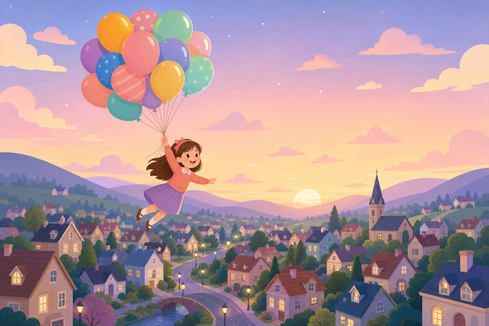
Whimsical flat illustration of a girl flying with colorful balloons over a sleepy town at dawn, soft pastel palette, gentle gradient sky, cozy dreamy mood, clean shapes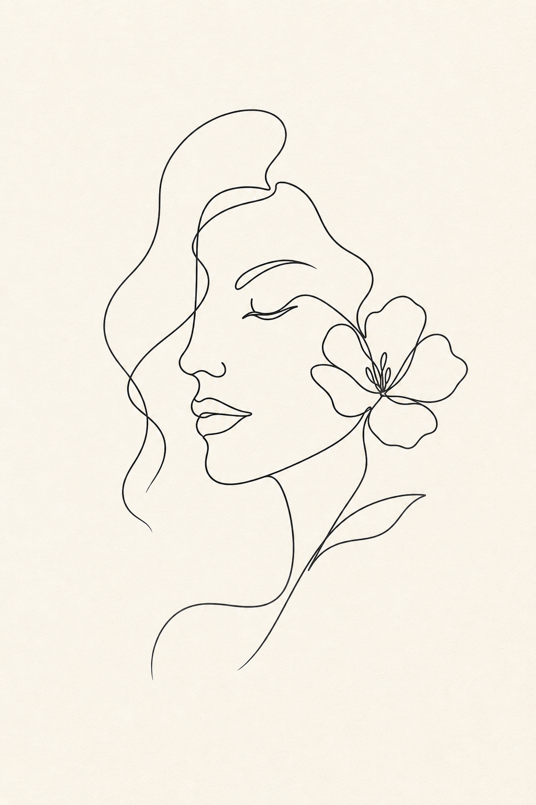
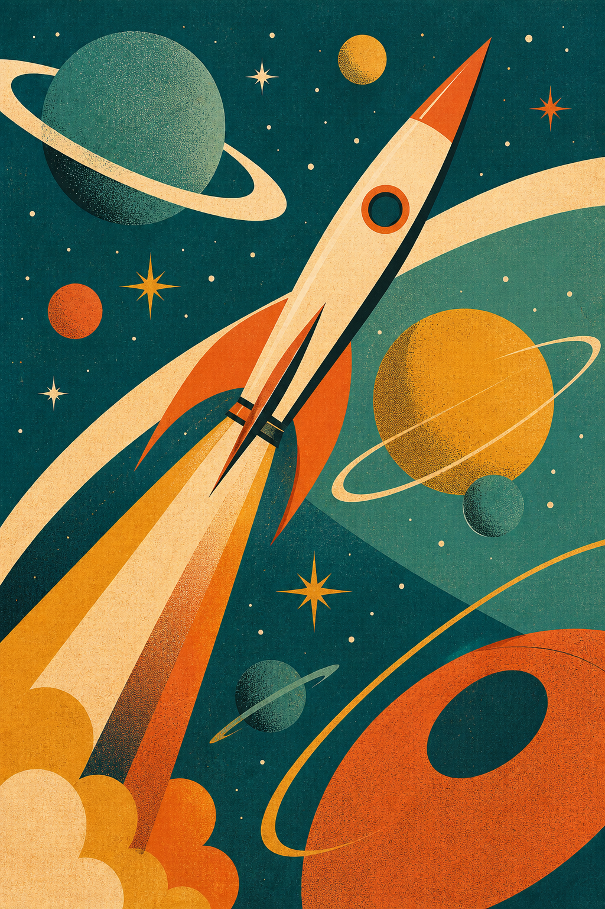
🐻 동화책 삽화
Storybook동화책 삽화는 gpt-image-2가 가장 안정적으로 잘 뽑는 장르로, 부드러운 수채/구아슈에 한 장면 서사와 텍스트 여백만 넣으면 거의 실패가 없다.
- 매체를 분명히 지정한다: 'soft watercolor and gouache' 또는 'soft pastel watercolor'
- 한 장면에 주인공·행동·배경·감정을 압축한다 (예: 곰과 소녀가 별밤에 꿀을 나눈다)
- 텍스트 자리를 위치까지 지정한다: 'empty space at the bottom/top for text'
- 본문 글자를 그려달라고 하지 말 것 — 그림만 만들고 여백만 비워둘 것
- 무섭거나 복잡한 요소를 섞지 말 것 (포근한 톤과 충돌함)
- 한 장면에 캐릭터·소품을 과하게 욱여넣지 말 것 (여백과 일관성이 무너짐)
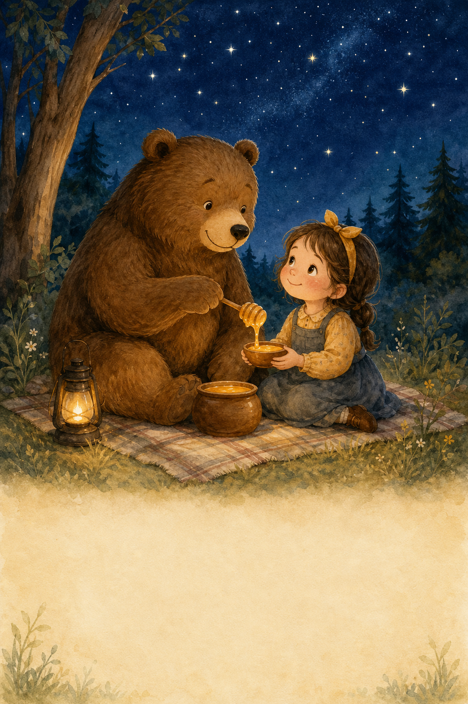
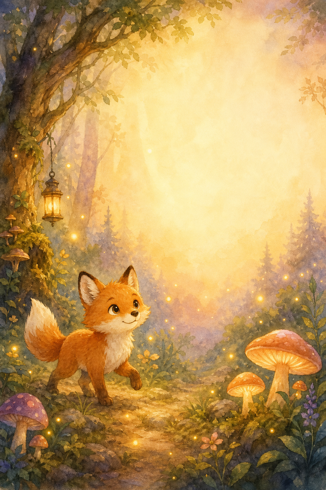
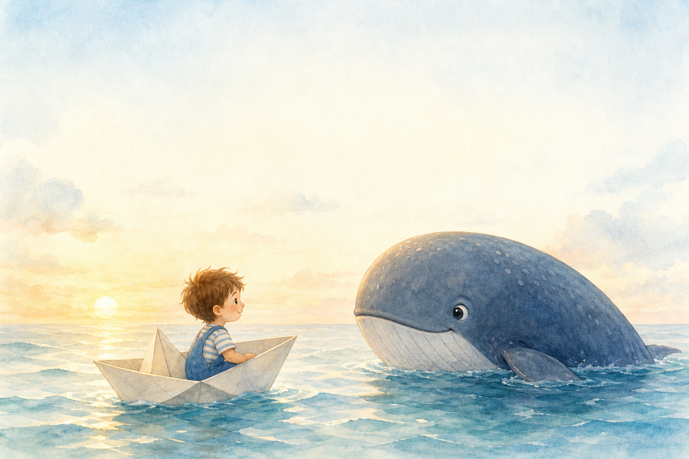
🧸 캐릭터 디자인
Character Design종족·체형·의상·표정·단일포즈·스타일을 한 줄로 구조화하면 gpt-image-2가 캐릭터를 매우 안정적으로 뽑는다.
- 종족·나이·체형 + 의상 + 표정 + 단일 포즈를 한 줄에 구조화한다
- 스타일 고정 키워드(3D Pixar, clean cel shading, semi-realistic painterly)를 박는다
- plain/neutral background + centered/full body로 캐릭터를 배경에서 격리한다
- 한 컷에 여러 포즈나 여러 캐릭터를 동시에 요구한다(특징이 섞이고 일관성 붕괴)
- 의상 디테일을 끝없이 나열한다(매번 달라지고 손·소품이 꼬임)
- 양손에 여러 소품을 들게 한다(손·활·무기 접합부 왜곡 유발)
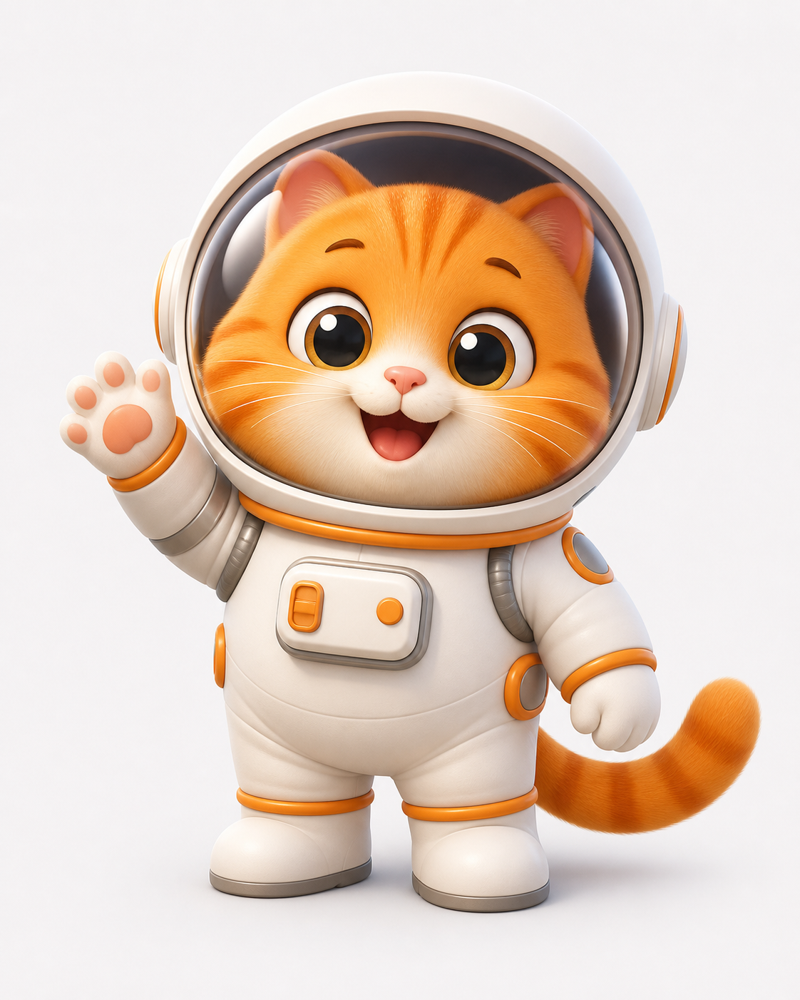
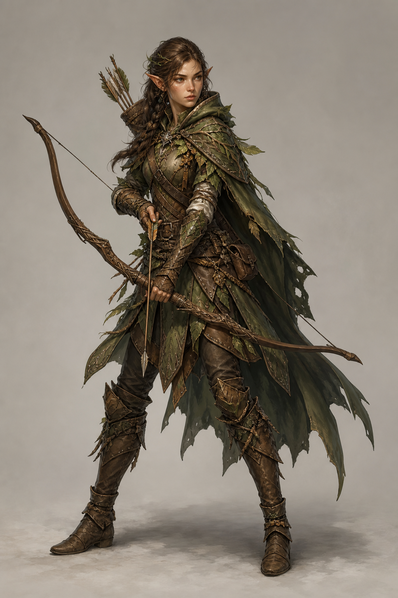
💬 웹툰·만화(말풍선)
Webtoon스타일 고정 + 단일 컷 + 빈 말풍선 전략을 쓰면 웹툰/만화 컷이 안정적으로 뽑힌다.
- 'Korean webtoon style, clean lineart, cel shading, vibrant' 같은 스타일 키워드를 프롬프트 앞쪽에 고정한다
- 'single comic panel, dynamic angle, character centered'로 단일 컷과 구도를 분명히 지시한다
- 텍스트가 핵심이면 'empty white speech bubble'로 풍선만 비워 뽑고 글자는 후편집한다
- 한 문장을 '여러 말풍선'에 넣으라고 하면 같은 문장이 두 풍선에 중복 복제될 수 있다(toon_04)
- 말풍선이나 효과 텍스트를 화면 가장자리에 배치하면 잘린다(toon_03의 'M', toon_02 풍선 모서리)
- 긴 한글 대사를 한 번에 정확히 나오리라 의존하지 말고 핵심만 짧게, 나머지는 후편집으로 채운다
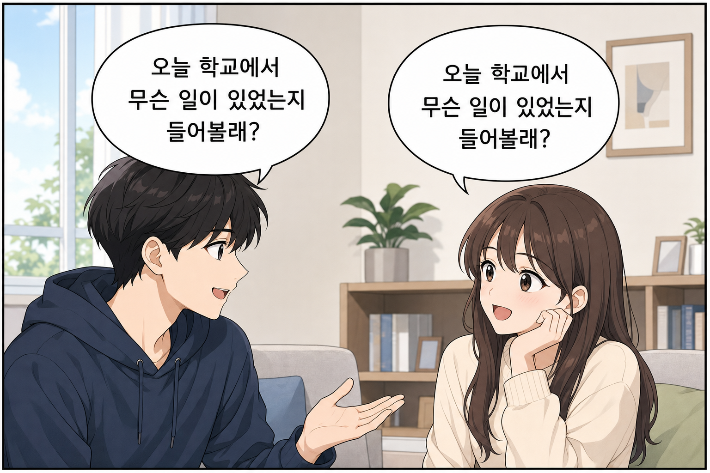
Korean webtoon panel, two characters talking, speech bubbles filled with the Korean sentence '오늘 학교에서 무슨 일이 있었는지 들어볼래?'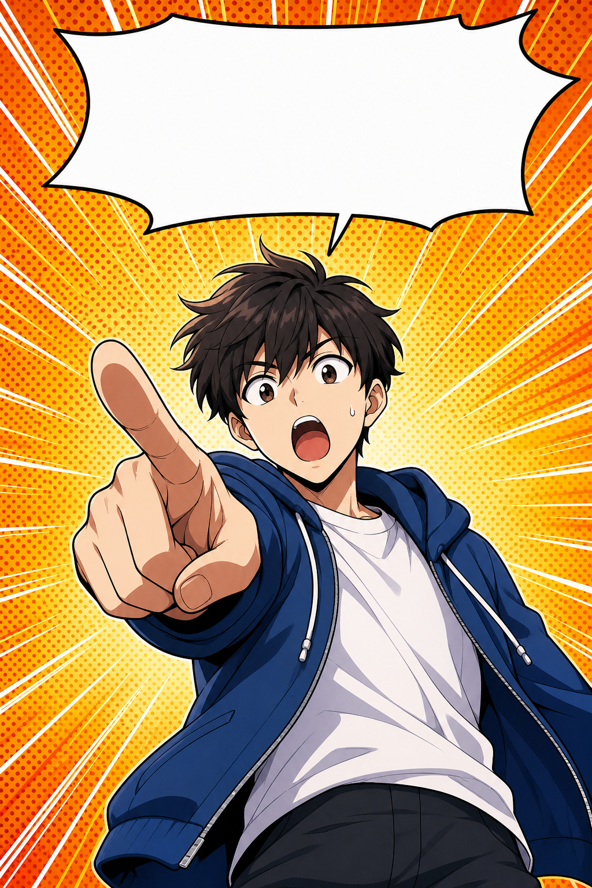
Single Korean webtoon style comic panel, clean bold lineart with cel shading, a surprised teenage boy pointing forward, dynamic low angle, vibrant colors, one large empty white speech bubble above him, halftone background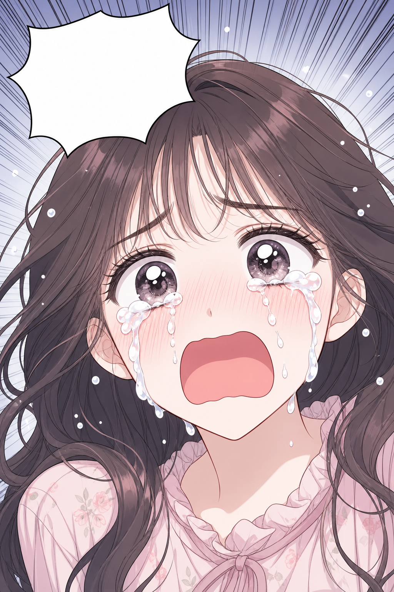
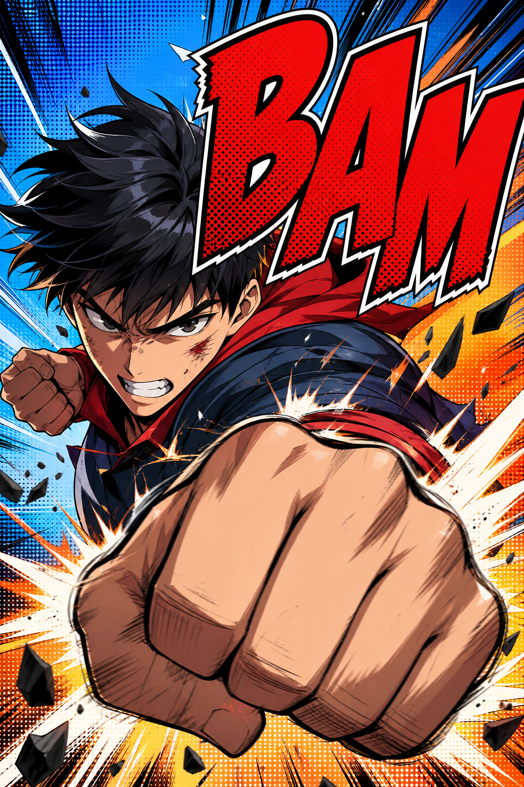
📣 광고·마케팅
Advertising광고 비주얼은 제품을 화면의 주인공(hero)으로 세우고, 카피가 들어갈 여백(copy space)을 비워두는 것이 핵심이다.
- 'centered hero product, dramatic rim/studio lighting, copy space on the right'처럼 주인공·조명·여백 위치를 명시한다.
- 혜택/감정을 장면으로 번역한다(상쾌함=물방울 스플래시, 신선함=피어오르는 김과 광택).
- 제품 형태·재질을 구체화한다(matte black case, glossy red can)로 엉뚱한 제품 생성을 막는다.
- 긴 슬로건을 이미지 안에 통째로 넣지 않는다 — 글자가 정확히 나와도 폰트·레이아웃·현지화를 통제할 수 없고 여백이 사라진다.
- 소품을 과하게 넣어 제품 주목도를 분산시키지 않는다.
- 브랜드 톤 지정 없이 'ad'만 외치지 않는다 — 색온도·배경 미지정 시 싸구려 전단지 룩이 된다.
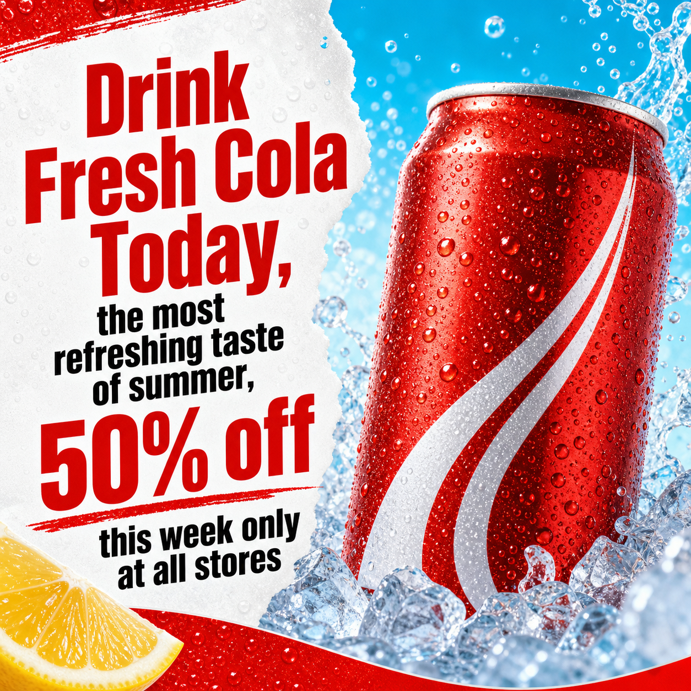
a soda ad with the full slogan written on it: 'Drink Fresh Cola Today, the most refreshing taste of summer, 50% off this week only at all stores'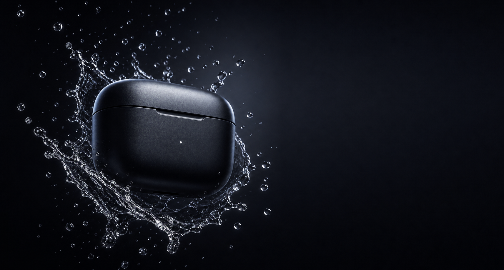
High-end product photography of a sleek matte black wireless earbuds case floating on a dark gradient background, dramatic rim lighting, water splash, premium tech ad mood, copy space on the right, 8k sharp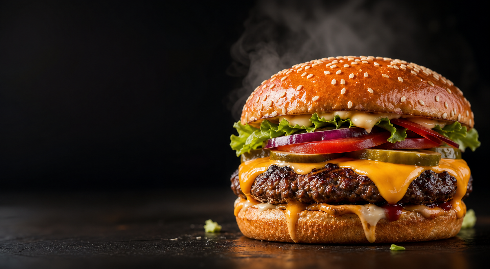
🪧 포스터·플라이어
Poster장르 무드 키워드 + 강한 구도 + 제목용 여백을 지정하면 바로 쓸 수 있는 포스터 키비주얼이 안정적으로 나온다.
- 'vintage travel poster' / 'minimalist concert poster'처럼 장르 무드를 문장 앞에 박는다
- 제목 자리를 위해 'large empty space at top for a title' 같은 여백 지시를 명시한다
- 'strong focal point, high contrast, limited retro palette'로 구도를 강하게 잡는다
- 날짜·장소 등 정보성 카피 문장을 통째로 생성시키지 말 것 — 텍스트가 깨진다
- 요소를 과밀하게 나열하지 말 것 — 초점이 흐려지고 산만해진다
- 'flat style'을 원하면 명시할 것 — 방치하면 광택 3D풍으로 흐를 수 있다
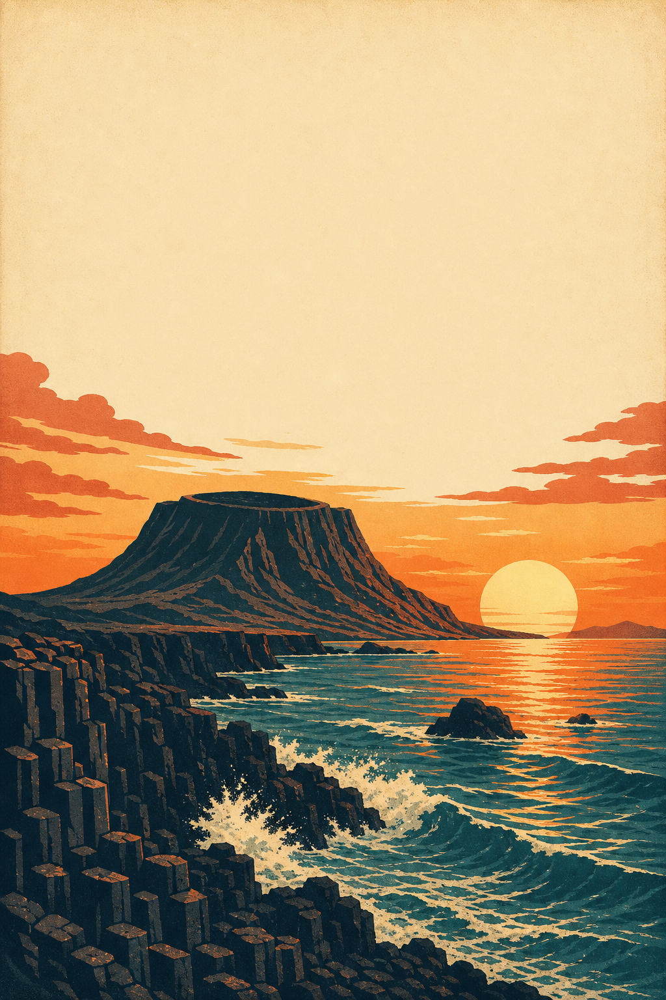
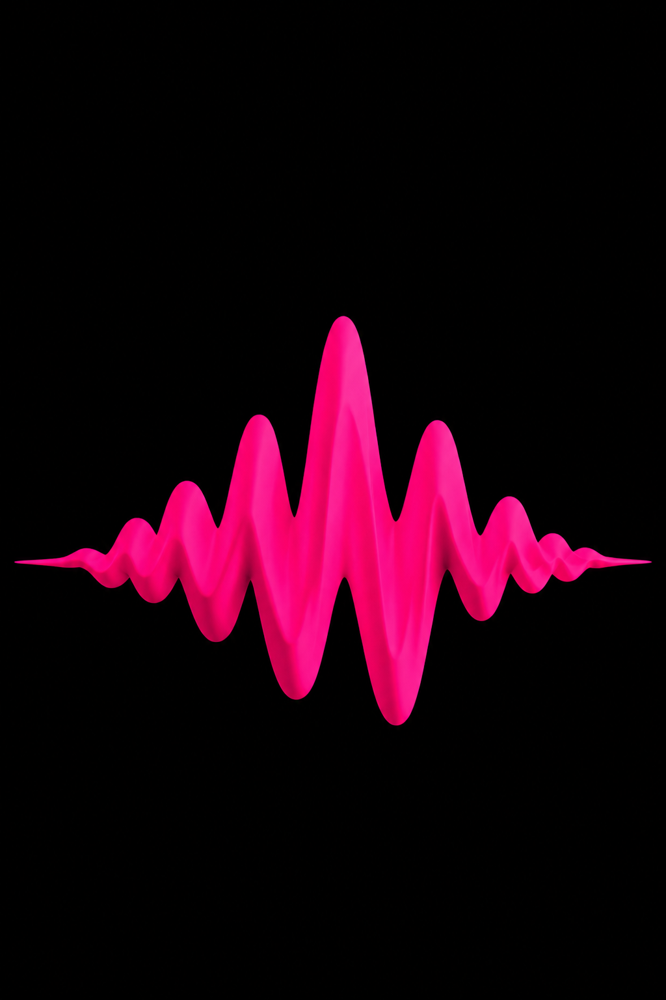
📱 SNS·카드뉴스
Social CardSNS 카드뉴스·썸네일은 '배경+여백 텍스트존'만 그리게 하면 거의 항상 성공한다
- 용도별 비율을 명시하라 - 카드뉴스/인스타는 'square 1:1', 유튜브 썸네일은 16:9로 자동 분기된다
- 'clean headline area at top' 'large empty center' 'empty space for text'처럼 글자 들어갈 빈 영역을 콕 집어 비워 달라고 하라
- 'bold high contrast flat style' 또는 'soft beige gradient, minimal'처럼 톤을 한 방향으로 강하게 고정해 시선 집중도를 높여라
- 카드 본문 문장을 프롬프트에 넣지 마라 - 긴 텍스트는 깨지므로 빈 영역만 확보하고 글자는 나중에 올려라
- 요소를 한 화면에 과하게 욱여넣지 마라 - 모바일 가독성이 떨어진다(핵심 비주얼 1개 + 여백 원칙)
- 여러 장 시리즈의 색·폰트·레이아웃 일관성을 한 번의 생성에 맡기지 마라 - 장당 수동 통제가 필요하다
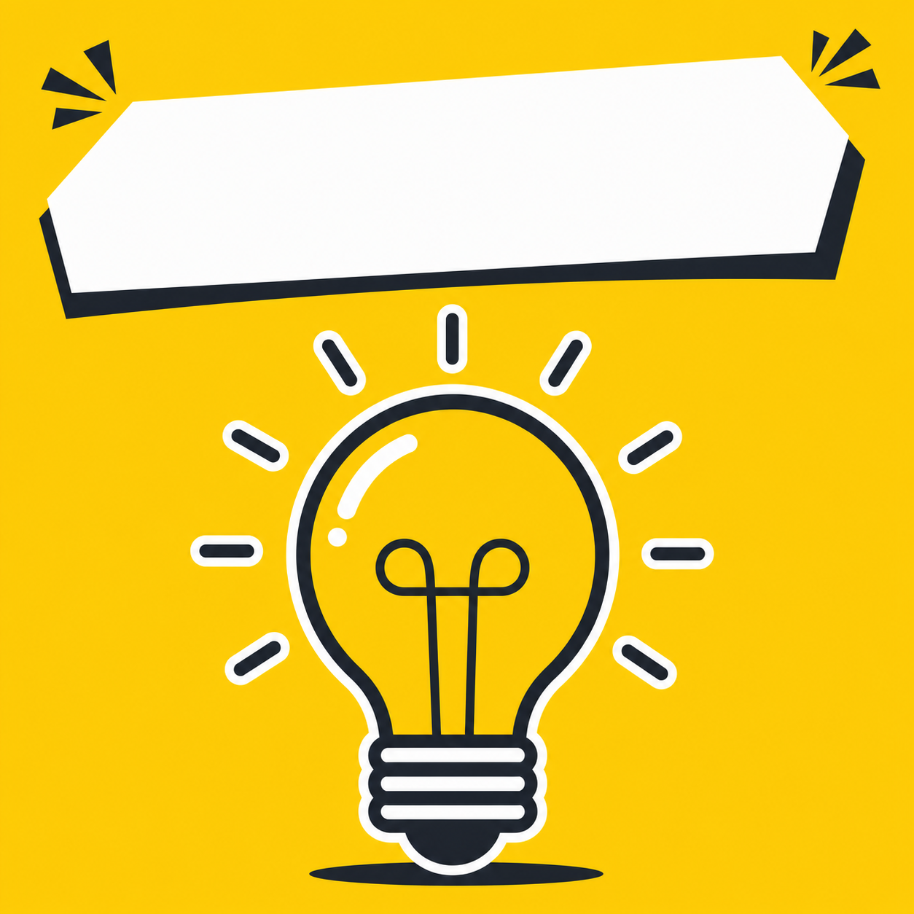
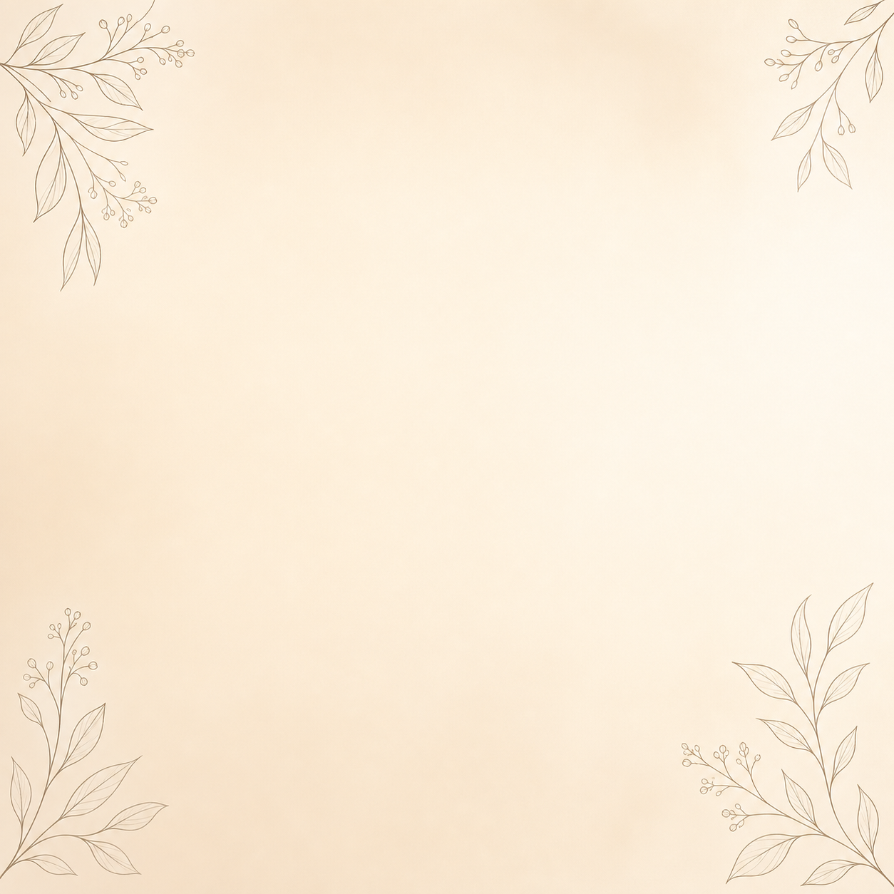
📦 제품 목업·패키징
Product Mockup재질·블랭크 라벨·스튜디오 조명을 명시하면 gpt-image-2가 후편집용 여백까지 갖춘 사실적인 커머셜 목업을 안정적으로 뽑는다.
- 재질을 구체적으로 적기(matte kraft paper, frosted glass, gold dropper cap)
- 'blank label/blank screen'으로 비워 글자 깨짐 방지 및 합성 여백 확보
- 스튜디오 조명+각도(three-quarter)+배경(white seamless/pastel)을 함께 지정
- 라벨에 실제 카피·로고를 넣지 말 것(깨지고 비현실적)
- 정확한 치수·용량 비율을 기대하지 말 것
- 과한 반사·이중 그림자를 요청해 비현실적으로 만들지 말 것
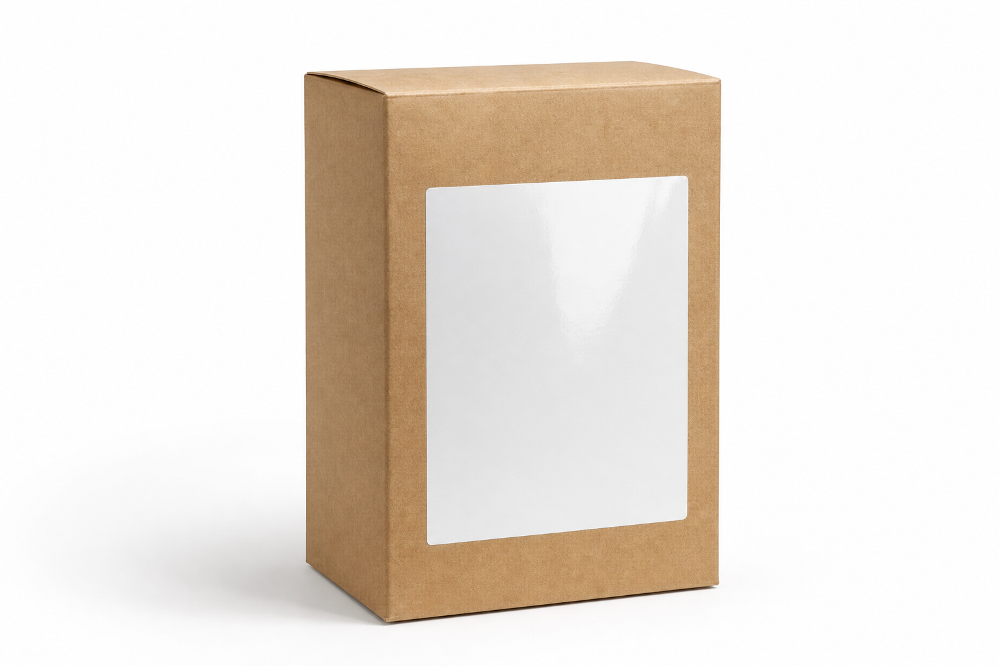
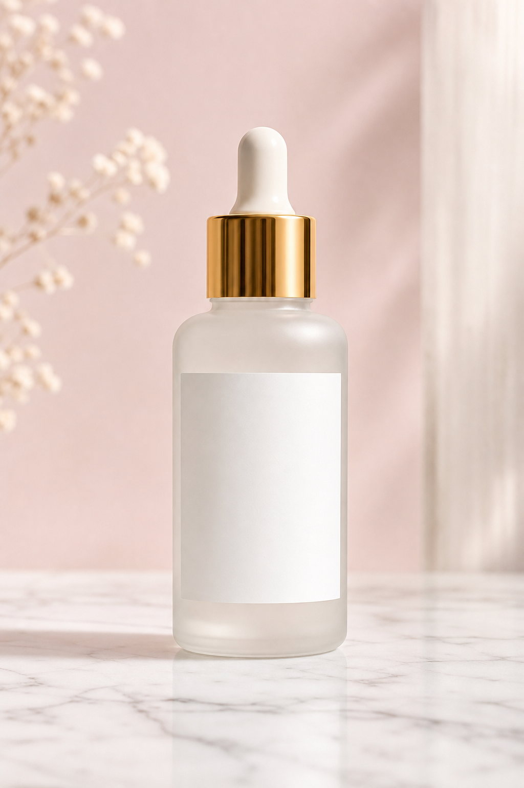
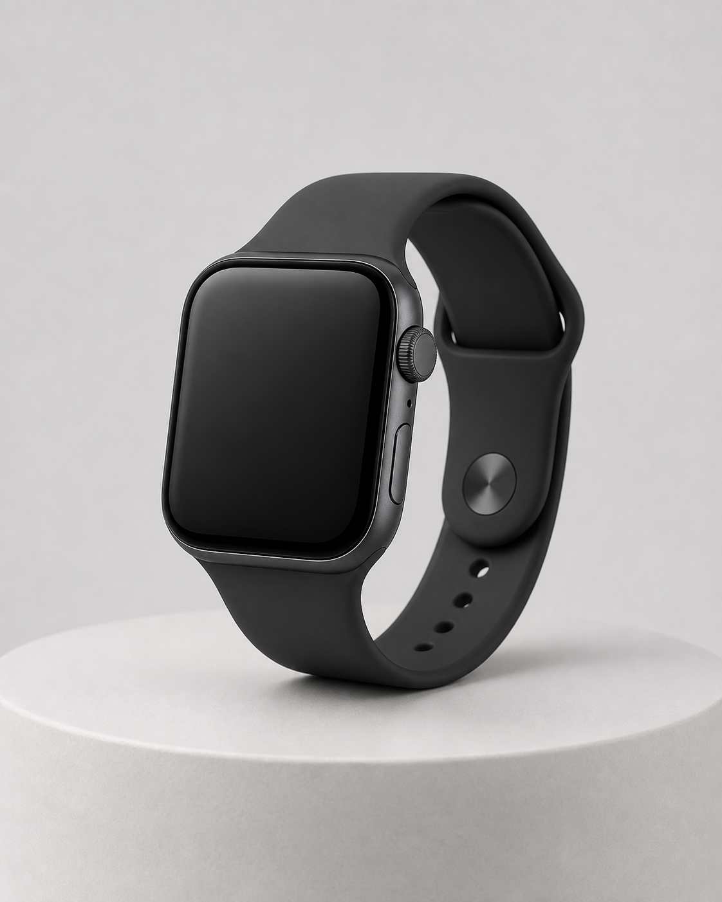
🍜 음식 사진
Food Photography음식 사진은 식감 키워드와 앵글 명시만 잘 챙겨도 군침 도는 결과가 안정적으로 나온다.
- 앵글을 'top-down flat lay' 또는 '45-degree angle'처럼 명확히 지정하면 정확히 반영된다
- 'steam rising, glossy, dripping ganache, condensation droplets' 같은 식감·온도 키워드로 군침 도는 디테일을 만든다
- 'rustic dark wooden table, natural soft side light, shallow depth of field'로 배경·조명·심도를 구체화한다
- 음료·국물 등 액체의 내용물 묘사를 모호하게 두면 이상한 부유물이 생긴다(텍스처를 구체화)
- 소품·배경을 과하게 넣어 음식 주목도를 떨어뜨리지 않는다(적정 소품만)
- 과한 광택·녹는 치즈 등 비현실적 과장 지시는 피한다
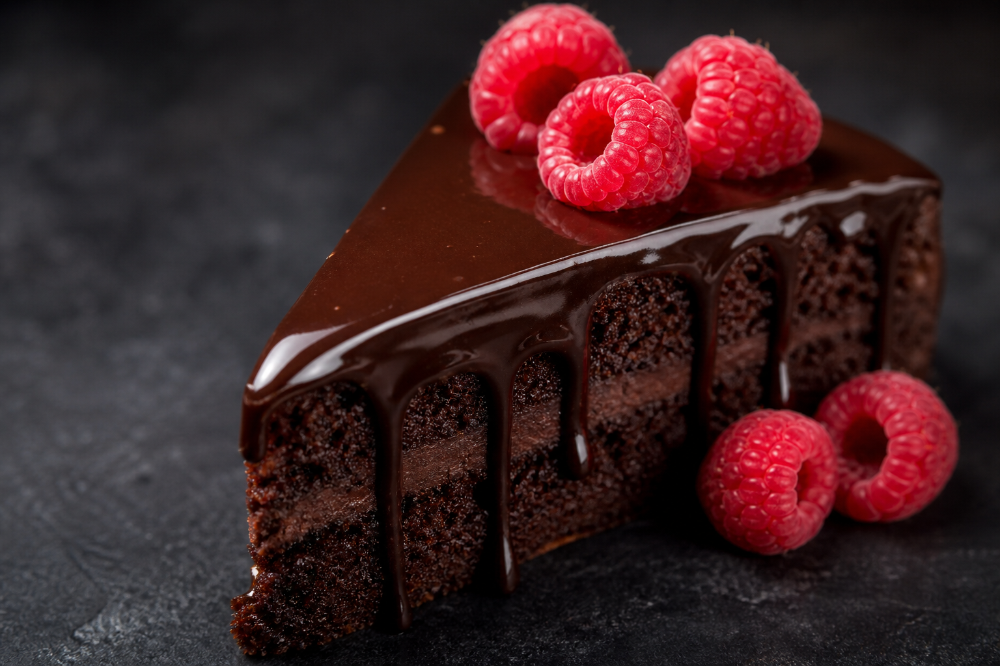
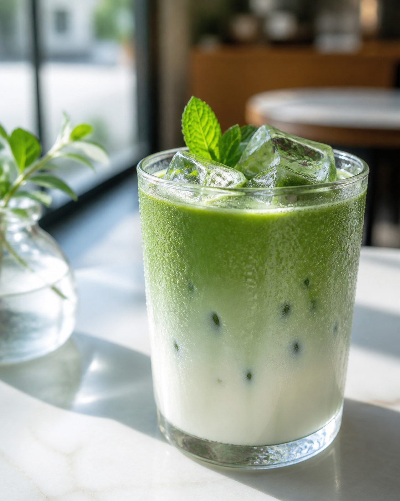
📷 사진 실사·인물
Photoreal Portrait카메라/렌즈/조명 어휘만 제대로 넣으면 gpt-image-2는 피부 질감까지 진짜 사진처럼 뽑아낸다.
- 렌즈와 조리개(85mm, f/1.8, shallow depth of field)로 배경 흐림과 거리감을 명시한다
- 조명을 구체적 명칭으로 지정한다(soft golden hour light, window light, Rembrandt lighting)
- 나이·표정·의상·배경을 함께 적어 'natural skin texture, photorealistic'로 사실성을 잠근다
- 치아를 활짝 드러낸 웃음이나 손가락 클로즈업을 무리하게 요구하지 않는다(왜곡 빈발)
- 실존 인물·유명인 이름으로 묘사하지 않는다(거부·왜곡 위험)
- ultra-retouched, flawless skin 같은 과보정 키워드로 플라스틱 피부를 만들지 않는다
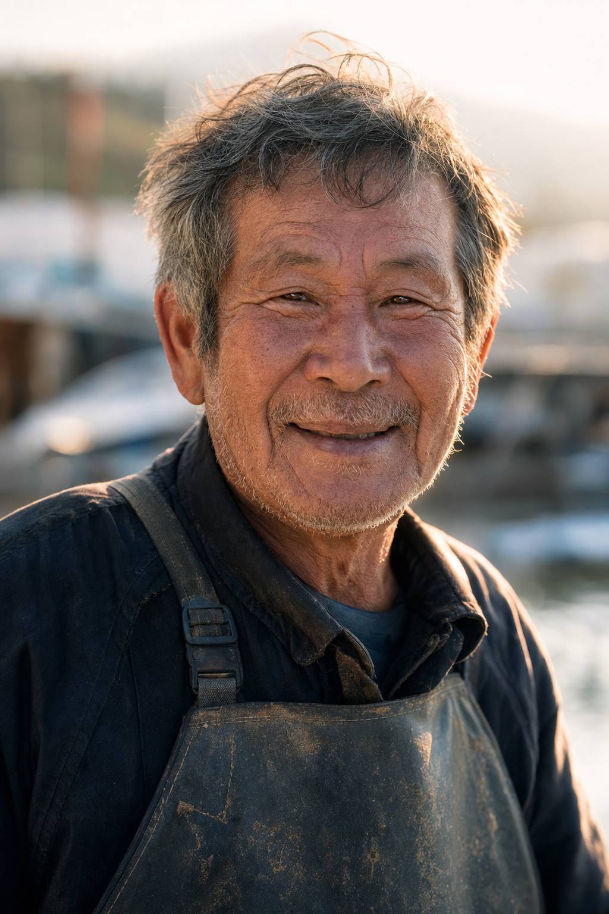
📊 인포그래픽
Infographic레이아웃·아이콘·색을 먼저 고정하면 gpt-image-2가 매우 깔끔한 인포그래픽을 뽑지만, 안에 박힌 숫자/데이터는 절대 신뢰하면 안 되는 장르다.
- 레이아웃을 먼저 못박기: 'vertical infographic, 3 numbered sections stacked' 처럼 배열·개수·방향을 명시한다.
- 아이콘 스타일과 색을 통일하라: 'consistent two-color line icons (teal and coral)' 로 톤을 묶으면 일관성이 살아난다.
- 라벨은 짧은 단어로, 위치만 지시하고 텍스트는 최소화한다 (large number + minimal short label).
- 정확한 숫자·긴 설명문을 요구하지 마라 — 글자가 깨끗해 보여도 데이터(숫자 합계)는 신뢰할 수 없다.
- 섹션 경계를 지정하지 않으면 아이콘·라벨이 뒤죽박죽 배치된다.
- 차트(파이/바) 비율을 실제 데이터 근거로 믿지 마라 — 장식용일 뿐 비율이 수치와 일치하지 않는다.
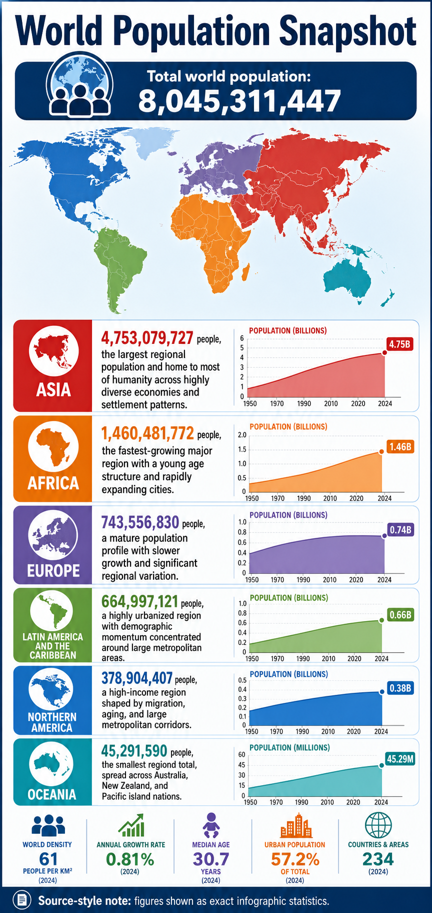
a detailed infographic about world population with exact statistics, precise numbers like 8,045,311,447 and long explanatory sentences for each region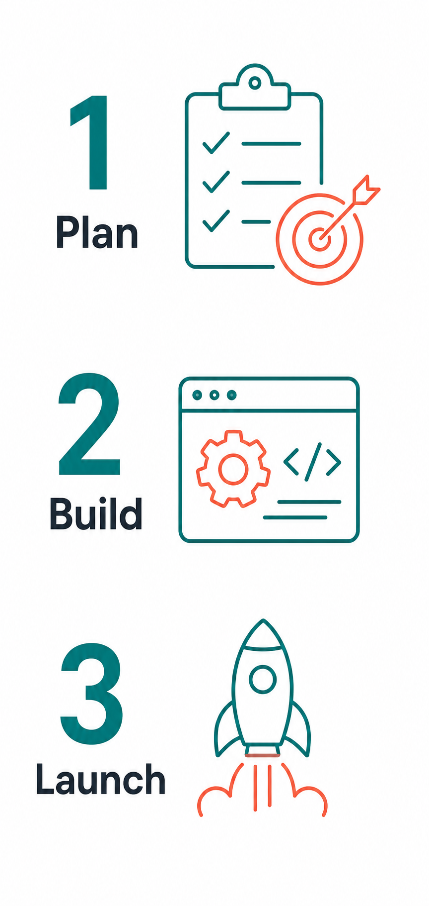
Clean vertical infographic with 3 stacked numbered steps, consistent two-color line icons in teal and coral, large step numbers, minimal short labels, generous white space, flat modern style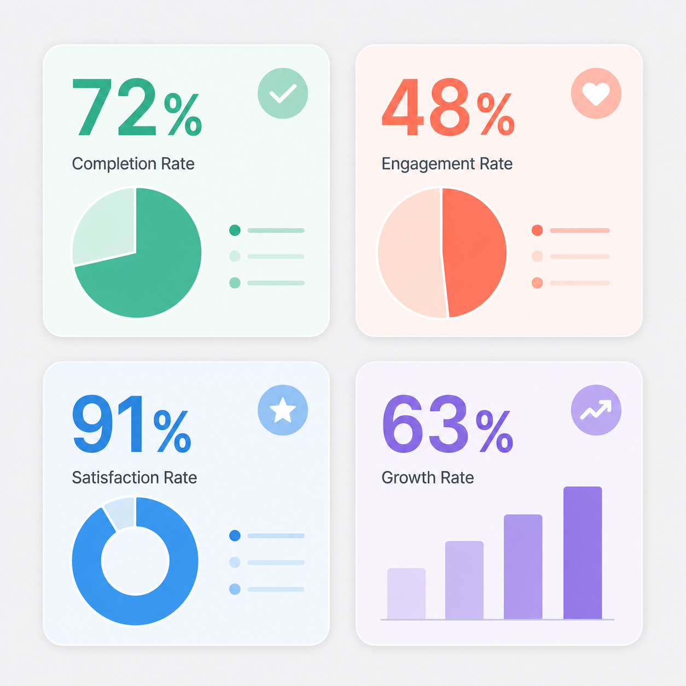
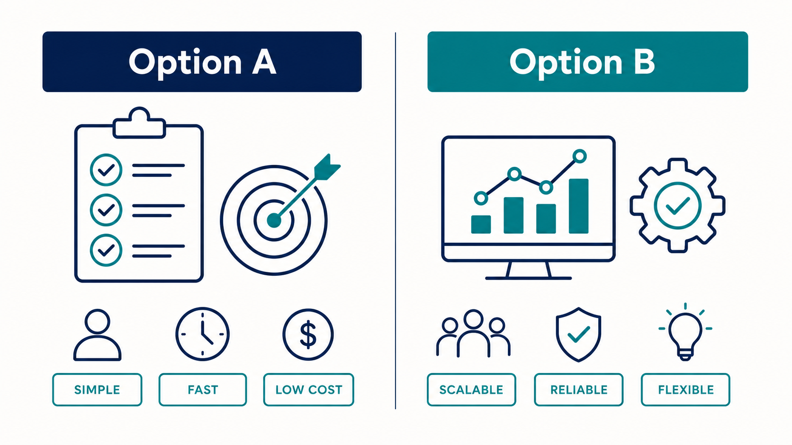
📈 데이터 시각화·차트
Data Viz차트는 '진짜 데이터'가 아니라 '차트 모양 일러스트'로 생각하면 거의 항상 깔끔하게 뽑힌다.
- 차트 종류를 한 개만 콕 집기(single bar chart / donut / line graph)와 'flat modern dashboard, pastel, soft grid' 스타일 키워드를 함께 넣기
- 막대 개수·세그먼트 개수·추세 방향 같은 '형태'만 지정하고 'decorative not precise'로 정확한 수치 기대를 버리기
- 텍스트 대신 'title area'·'legend dots'·플레이스홀더 라인을 요청해 깨진 글자/축 라벨을 원천 차단하기
- 실제 숫자·축 눈금값·정확한 비율(예: 42%)을 요구하지 말 것 — 모두 장식이며 신뢰 불가
- 범례·축 라벨 텍스트를 글자로 써달라고 하지 말 것 — 거의 깨지거나 의미 없는 글자가 됨
- 여러 차트가 빽빽한 복잡 대시보드 한 장으로 욕심내지 말 것 — 요소가 뒤죽박죽됨
🖥️ 프레젠테이션 슬라이드
Slide슬라이드는 '글자 없는 배경·비주얼'을 한쪽으로 몰고 반대쪽을 비워 제목 자리를 만드는 게 정석 — 본문 글자는 발표 도구에서 직접 얹는다.
- 비주얼/배경만 생성하고 제목·본문은 빈 여백으로 남겨 PowerPoint/Keynote에서 진짜 텍스트를 얹어라(편집성·정확성 확보).
- 'large empty space on the left for title' 처럼 한쪽 여백을 명시해 제목 자리를 비워라(slide_01·03에서 깔끔히 성공).
- 'corporate, minimal, single accent color, deep blue/teal' 같은 톤·색 단어로 브랜드 톤을 통일하라.
- 본문 문장·표·수치까지 통째로 이미지에 굽지 마라 — slide_04처럼 글자가 멀쩡히 나와도 수치가 날조되고 수정 불가능한 평면 래스터가 된다.
- 16:9를 프롬프트 키워드에만 의존하지 마라 — 실제 픽셀 비율은 생성 size 설정으로 잡고 'widescreen'은 구도 유도용으로만 써라.
- 여백을 없앨 만큼 그래픽을 꽉 채우거나(가독성↓) 반대로 slide_02처럼 너무 밋밋하게 비우지 마라 — 균형이 필요.
a full presentation slide with a title and five complete bullet point sentences of real text about quarterly business results16:9 widescreen presentation title slide background, abstract flowing gradient in deep blue and purple, subtle geometric lines on the right, large empty space on the left for a title, corporate minimal mood📚 교육 교재·학습자료
Education친근한 톤과 '단순·깔끔·라벨 공간'을 지정하면 개념 시각화와 짧은 영어 라벨이 교과서처럼 깔끔하게 나오는 장르.
- 대상 연령/톤을 명시한다 (예: 'for elementary students', 'friendly textbook look').
- 개념을 화살표·단계·단면으로 구조화하고 'simple, clean, space for short labels'를 덧붙인다.
- 라벨은 Flower/Roots 같은 짧은 영어 단어 위주로, 핵심 요소만 도해한다.
- 긴 의학·학술 용어를 한꺼번에 많이 요청하지 말 것 — 이번엔 멀쩡했지만 오타·깨짐 위험이 크고 재현이 보장되지 않으니 핵심 도형만 생성 후 라벨 합성을 권장.
- 캐릭터와 복잡한 개념 설명을 한 화면에 섞지 말 것 (산만해짐).
- 해부도 등 과학적 정확성을 맹신하지 말 것 — 참고용이며 사실 검증이 필요하다.
a detailed labeled diagram of the human digestive system with every organ correctly named in long medical termsFriendly educational illustration of the water cycle for elementary students, simple cartoon style, sun, fluffy clouds, rain over mountains, a river to the sea, arrows, soft colors, clean, space for short labels🗺️ 지도·다이어그램
Map & Diagram짧은 단어 라벨과 박스/화살표 개수·흐름을 숫자로 못박으면 지도·플로우차트는 gpt-image-2가 가장 안정적으로 성공하는 장르다.
- 라벨은 짧고 흔한 한 단어로 (Plan/Build/Test, 지명 한 단어) 주면 철자가 정확히 렌더된다
- 박스·화살표 개수와 흐름 방향을 숫자로 명시한다 ('4 rounded boxes connected by arrows left to right')
- 스타일 형식을 앞에 못박는다 (illustrated map / clean flowchart / isometric city map)
- 긴 문장 라벨이나 한 이미지에 많은 텍스트를 요구하면 오타·깨짐 위험이 커진다
- 복잡한 다중 분기 노드 다이어그램은 연결 논리가 엉킨다
- 모순된 시점 지시(top-down + isometric 동시)는 의도를 흐린다
🌐 웹사이트 시안·UI
Website Mockupgpt-image-2는 디바이스와 섹션 구조를 순서대로 나열하면 웹/앱 UI 시안을 의도대로 뽑아주며, 짧은 영어 UI 텍스트(메뉴·버튼·라벨)까지 놀랍도록 깨끗하게 렌더한다.
- 디바이스·뷰를 먼저 못박기('desktop website landing page UI mockup, full screen' / 'mobile app screen')
- top nav → hero → 3 feature cards → bottom tab처럼 섹션을 위→아래 순서로 구체적으로 나열
- modern SaaS, lots of whitespace, rounded cards, soft shadows, blue/white처럼 디자인 시스템 어휘로 톤 고정
- 한 화면에 섹션을 6개 이상 욱여넣어 레이아웃 붕괴를 자초하지 말 것
- 픽셀 단위 정렬·정확한 그리드를 보장으로 기대하지 말 것(컨셉 검토용, 코드 변환 전 단계)
- 긴 문단의 정확한 워딩까지 통제하려 들지 말 것 — 짧은 라벨은 정확하지만 본문은 placeholder 권장
a website mockup where every menu item, button and paragraph has fully readable correct English text and real working contentModern SaaS website landing page UI mockup, desktop full screen, top navigation bar, large hero section with a bold heading and a rounded call-to-action button, three feature cards with icons below, lots of whitespace, soft shadows, blue and white🧩 UI 컴포넌트
UI Component단일 컴포넌트 클로즈업과 디자인 시스템 키워드(glass/neumorphism)를 명시하면 매우 안정적으로 프리미엄 결과가 나오는 장르
- glassmorphism/neumorphism/material 같은 디자인 시스템 키워드를 명시하고 soft shadow·rounded corners·subtle gradient 등 표면 디테일을 함께 기술
- 'single component, close up'과 blurred/light 배경으로 컴포넌트 하나를 강조
- 넣을 텍스트는 짧은 라벨·숫자(78%, Completed 등)로 제한해 가독성 확보
- 컴포넌트 내부에 긴 문장이나 많은 텍스트를 넣지 말 것(깨짐 위험)
- 한 장에 서로 다른 컴포넌트를 과하게 나열해 스타일 일관성을 떨어뜨리지 말 것
- 정확한 픽셀 스펙·정밀 수치 정렬을 기대하지 말 것
🔖 로고·브랜딩
Logo & Branding심볼 마크는 '한 단어 은유 + 단색 + no text + 흰 배경 중앙'으로 요청하면 바로 쓸 만한 깔끔한 로고가 나온다
- 'leaf forming a coffee cup'처럼 컨셉을 한 단어 은유로 묶어 지시
- single color/limited palette, vector style, centered on white로 단순성 고정
- no text를 명시해 워드마크 깨짐을 원천 차단
- 로고 안에 회사명·문구 넣기(철자 깨짐)
- 과한 디테일·그림자·질감으로 로고를 복잡하게 만들기
- PNG 결과를 그대로 인쇄/납품(벡터 변환 없이 사용 금지)
🔣 아이콘 세트
Icon Set개수+그리드+통일 스타일+아이콘 이름 나열을 명시하면 gpt-image-2가 일관된 아이콘 세트를 매우 안정적으로 뽑아낸다.
- 개수와 그리드를 함께 지정한다(예: set of 9 icons in a 3x3 grid)
- 스타일·색·획 두께를 한 묶음으로 명시하고 consistent를 강조한다
- 원하는 아이콘 의미를 home, search, settings처럼 콤마로 나열한다
- 16개 이상 과도한 개수 요청으로 품질을 떨어뜨리지 말 것
- 스타일 어휘 없이 '아이콘들'만 요청해 세트 내 편차를 방치하지 말 것
- 단색을 원하면서 색 지정을 빼 제각각 컬러가 섞이게 두지 말 것
🧊 아이소메트릭·3D
Isometric 3D단일 건물·방·섬을 미니어처 디오라마로 만드는 장르로, 투영·재질·소프트섀도가 가장 안정적으로 나오는 강점 분야다
- 투영+재질+배경을 한 문장에 묶기: 'isometric 3D render, clay/low poly, soft shadows, centered on plain background'
- 단일 오브젝트(건물 1채·방 1칸·섬 1개)로 한정해 투영 왜곡을 차단
- 파스텔/밝은 팔레트와 soft global illumination으로 깔끔한 디오라마 톤 유지
- 여러 건물이 늘어선 복잡한 거리/도시 씬은 투영이 무너지니 피하기
- clay와 low poly처럼 상충하는 재질 키워드를 동시에 넣어 톤 흐리지 않기
- 간판 글자·라벨 텍스트에 의존하지 말기(깨짐) — 심볼/엠블럼으로 대체
🏛️ 건축·인테리어
Architecture양식·공간·재질·조명을 한 문장에 명시하면 gpt-image-2는 잡지급 건축/인테리어 렌더를 안정적으로 뽑는다
- 양식·공간·재질·조명을 한 문장에 구체적으로 명시한다 (예: Scandinavian, oak floor, white walls, soft daylight)
- 카메라·시점을 더한다 (wide angle, eye-level, one-point perspective)
- 'architectural visualization / realistic render'에 분위기 단어(cozy, airy, cinematic)를 붙여 톤을 잡는다
- 가구·소품을 과도하게 나열하지 마라 — 배치가 산만해지고 비현실적 구도가 나온다
- 사람을 명시하지 마라 — 형태가 자주 깨진다(arch_02 소파 위 인물형 왜곡 참고)
- 'one-point perspective' 같은 정확한 원근·치수를 100% 신뢰하지 마라 — 약간 비스듬해질 수 있어 컨셉용으로만 쓴다
🌿 패턴·배경 텍스처
Pattern & Texture모티프·배경색·팔레트를 한 번에 고정하면 gpt-image-2가 균일한 반복 패턴과 배경 텍스처를 안정적으로 만든다.
- 모티프+배경색+팔레트를 함께 고정한다 (예: monstera leaves + cream background + muted sage)
- 'evenly scattered / balanced spacing'로 분포와 간격을 명시한다
- 'flat illustration / modern flat style' 같은 스타일 키워드로 질감을 통일한다
- 'seamless'를 넣어도 타일 경계는 완벽히 맞지 않으니 진짜 타일링은 후처리 전제로 둔다
- 밀도를 과하게 지시하면 노이즈처럼 보이니 'small/soft/sparse'로 조절한다
- 그라디언트 배경에 'subtle'을 써도 채도가 다소 올라갈 수 있으니 색 가짓수를 적게 지정한다
🕹️ 픽셀아트·게임
Pixel & Game16비트 픽셀아트 스프라이트·배경·아이콘을 그럴듯하게 뽑지만, 진짜 균일 도트 그리드가 아닌 '픽셀 흉내'(부드러운 그라데이션 혼합) 수준이다.
- '16-bit pixel art' 스타일과 에셋 종류(character sprite / side-scroller background / item icons)를 프롬프트 앞에 명확히 박을 것
- 'plain background' + 'clean pixel outlines' + 'limited vibrant palette'로 스프라이트 가독성과 팔레트를 통제할 것
- 배경은 'layered trees / parallax layers feel'처럼 깊이감 키워드를 넣어 레이어 분리를 유도할 것
- 진짜 픽셀 단위 정밀도(균일한 도트 그리드)를 기대하지 말 것 — 그라데이션이 섞인 흉내 픽셀이 나온다
- 'side view' 같은 시점 지시는 자주 무시됨(정면 3/4로 출력) — 시점 의존 작업은 결과 검증 필수
- 작은 HUD 텍스트나 스프라이트 시트 간 일관성은 기대하지 말 것 — 깨지거나 어긋난다
✂️ 이미지 편집·변형
Image Editinggpt-image-2는 마스킹 편집이 아니라 '원본 묘사+변경점'을 함께 적어 새로 그리는 재묘사 재생성으로 편집을 흉내낸다.
- 원본 장면을 다시 묘사하고 변경점만 'now/but' 구문으로 명확히 추가한다
- 스타일·구도·색을 유지하려면 'same composition/style, watercolor style'처럼 명시 반복한다
- 요소 추가/제거는 위치까지 지정(on the chair)해 변경 의도를 또렷이 한다
- '배경만 바꿔'식 부분 편집을 기대하지 말 것 — 장면 전체가 다시 그려진다
- 인물·구도·디테일의 픽셀 단위 동일 유지를 요구하지 말 것 (불가)
- 여러 원본을 합성하라거나 복잡한 멀티 레퍼런스 지시를 한 번에 주지 말 것
⚠️ 제한사항과 주의점
gpt-image-2가 잘 못하는 것과 그 회피책입니다. 미리 알면 헛수고를 줄입니다.
⚠️ 정확한 종횡비·픽셀 치수를 강제할 수 없다 (정사각 쏠림 + 버킷 스냅)
원하는 비율을 적어도 결과는 모델이 정한 몇 가지 크기로 '스냅'되고, 특히 지시가 약하면 정사각형(약 1254x1254)으로 쏠리는 경향이 강하다. 가로 풍경을 요청하면 1.5:1(1536x1024)이나 1.78:1(1672x941)처럼 변하긴 하지만, '정확히 16:9 1920x1080' 같은 임의의 정밀 치수는 맞춰주지 않는다.
⚠️ 차트·인포그래픽 속 숫자와 비율은 '데이터'가 아니라 '장식'이다
막대·도넛·파이·라인 그래프 모양은 깔끔하게 뽑히지만, 그 안의 수치·축 눈금·비율은 실제 데이터와 무관한 장식값이다. 보기엔 그럴듯해도 합계가 안 맞거나(헤드라인 80억과 지역 합계가 약 100만 어긋남) 파이 비율이 표기 숫자와 대충만 일치한다.
⚠️ 부분(마스킹) 편집이 안 된다 — 매번 전체를 다시 그리며 구도가 흔들린다
'배경만 바꿔', '이 부분만 수정'처럼 일부만 고치는 편집이 불가능하다. 편집을 요청하면 장면 전체를 새로 그리므로, 스타일 변환 시 창·가구 위치가 좌우로 옮겨지고 의자 색이 바뀌는 등 원본과의 픽셀 동일성이 깨진다.
⚠️ 같은 캐릭터·장면을 똑같이 반복 재현할 수 없다 (시드·레퍼런스 고정 부재)
시드나 레퍼런스 잠금 수단이 없어, 같은 캐릭터를 여러 장에 걸쳐 동일하게 유지하기 어렵다. 또 한 컷에 여러 포즈나 여러 캐릭터를 동시에 요구하면 특징이 섞이며 일관성이 무너진다. 단발 캐릭터 한 장은 매우 잘 뽑히지만, '시리즈로 똑같이' 나오는 건 보장되지 않는다.
⚠️ 시점·질감 같은 세부 지시가 종종 누락된다 (side view→정면 3/4, flat→광택 3D)
전체 무드는 잘 따르지만 '옆모습(side view)', '평면(flat)' 같은 단서가 조용히 무시되는 경우가 잦다. 옆모습을 요청한 스프라이트가 정면 3/4로 나오고, 'flat' 포스터가 광택 3D 풍선으로 흘렀다.
⚠️ 빽빽한 텍스트·다수 라벨·정확한 숫자는 '재현성'이 낮다 (못 하는 게 아니라 매번 보장 안 됨)
짧은 영어 단어·라벨과 짧은 한글은 의외로 또렷하게 잘 나오고(소화기관 도해의 라벨 21개가 한 번에 모두 정확히 렌더된 사례도 있음), 긴 영어 문장도 종종 성공한다. 다만 글자가 빽빽해지거나 정확한 숫자가 섞이면 같은 프롬프트라도 다음 생성에서 오타('regiond')나 표기가 흔들린다. 핵심은 '못 한다'가 아니라 '매번 똑같이 보장되지 않는다'이다.
⚠️ 픽셀아트는 진짜 도트 그리드가 아니라 '픽셀 흉내'다
16비트 풍 스프라이트·아이콘을 그럴듯하게 그리지만, 외곽선만 굵은 도트이고 내부는 부드러운 그라데이션이 섞여 균일한 도트 그리드가 아니다. 게임에 바로 넣을 정밀 픽셀 에셋으로는 부족하다.
⚠️ 매끈한 타일링(seamless)이 보장되지 않는다 — 패턴 경계가 안 맞는다
'seamless repeating pattern'이라고 적어도 분위기만 유도될 뿐 실제 좌우·상하 타일 경계가 완벽히 이어지지 않는다. 모티프·간격·팔레트는 잘 따르지만 한 장을 그대로 반복 배치하면 이음매가 드러난다.
⚠️ (운영) 실존 인물·유명인·브랜드 로고·상표는 거부되거나 왜곡될 수 있다
실제 유명인이나 특정 브랜드 로고·상표를 그대로 요구하면 안전 정책상 거부되거나, 비슷하지만 다른 형태로 왜곡되어 나올 수 있다. (이번 실험 세트에는 해당 생성 결과가 없어 실측 이미지 없이 일반 운영 주의로만 기재한다.)
⚠️ (운영) 시드 고정이 없어 결과가 매번 달라지고, 원하는 컷까지 재생성 비용이 든다
동일한 프롬프트라도 생성할 때마다 구도·디테일이 달라진다(스타일 변환 시 구도가 매번 재배치되는 데서 확인됨). 원하는 결과를 얻으려면 여러 번 생성해야 하므로 호출 횟수·시간·비용이 늘고, 프롬프트가 복잡·과밀할수록 실패율과 재생성 비용이 커진다.